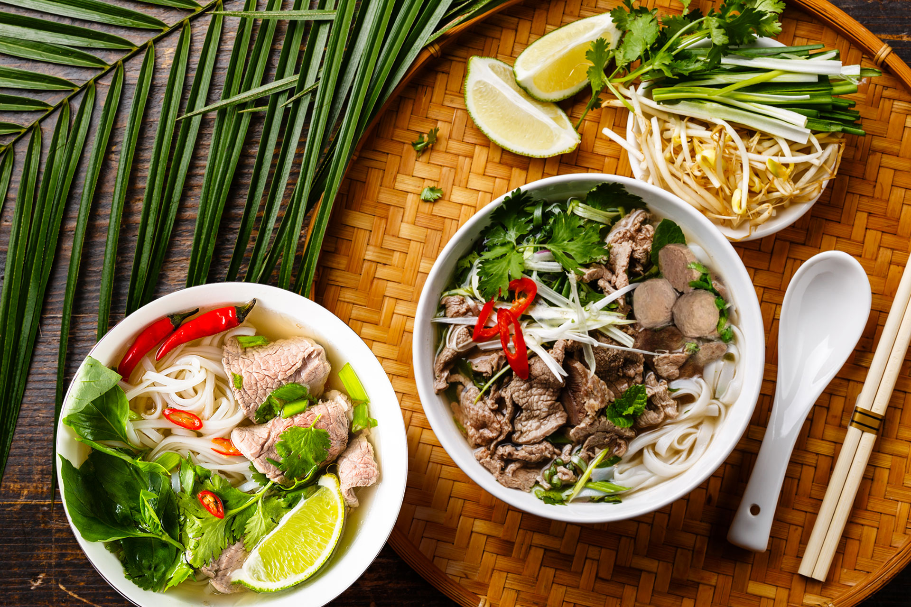

12 Feb
The story of Vietnamese Pho
Where did Pho, Vietnam really come from?
To the casual visitor, the province of Nam Dinh flies under the radar. Situated in the Red River Delta, Nam Dinh is known for agricultural areas and beautiful churches. Tran Hung Dao, the 13th-century national hero who helped defeat invading Mongol hordes, came from these parts. But Nam Dinh’s most significant contribution to Vietnam is the beef noodle soup, phở bò.
Legends and myths mean that many histories in Vietnam are coloured a variety of shades. This is also the case with phở, the country’s most famous dish, and its most successful culinary export. In the capital city of Hanoi, phở is a staple breakfast dish.
From the early hours, phở stalls set up shop along the sidewalks. Shrouded in clouds of steam, the cook will assemble each bowl to order. Boiling broth is poured over a bed of soft rice noodles and sliced meat, and topped with a handful of chopped herbs and chives. Each diner will customise their bowl to taste, with squeezes of lemon, slices of red chili, sprigs of basil, and dabs of hoisin sauce. It's an experience no visit to Vietnam is complete without. While Nam Dinh is believed to be the geographical cradle of phở, few would dispute that its spiritual home is Hanoi. It was Hanoi's intersection of historical and cultural factors made phở popular.

The history of phở begins at the end of the 19th century, at the peak of French colonialism. French demand led to a greater availability of beef in Vietnam. This in turn produced a surplus of beef bones, which were used by Chinese and Vietnamese vendors to deepen and perfect the flavour of the Nam Dinh broth.
Over the years, phở gained traction in Hanoi. It evolved from a noodle soup called xáo trâu -- a simple dish made with slices of water buffalo meat cooked in broth with rice vermicelli -- into a delicate and balanced creation. Buffalo meat was swapped with beef, round rice noodles were added, the flavour of the broth was refined, and the classic Hanoi phở was perfected.
Migrant workers from the Chinese provinces of Yunnan and Guangdong loved the new take, due to its similarity to dishes from back home. The Vietnamese, having developed a taste for beef, grew equally enamoured. By the 1930s, gánh phở — roaming vendors shouldering mobile kitchens on bamboo poles — had become a common sight in the streets of the Old Quarter.

Pho, Vietnam has inherited & developed the traditional cuisine
At the beginning of the 1950s when the French Colony divided Vietnam into 2 parts, Pho made its way to Saigon in South Vietnam. Then, Pho started to have a lot of variants. Up to now, there are three distinctive pho cultures which shaped by the Vietnamese turbulent history including Phở Bắc (Northern Recipe), Phở Huế (Central Vietnam Recipe), Phở Sài Gòn (Southern Vietnam Recipe). Generally, Pho Bac is characterized by the taste of salty. Pho Bac remains purity and rusticity that reflects the sensibilities of the Hanoian. Meanwhile, the Pho of South Vietnam often tastes sweeter, spicier because the South people prefer sweets sweet. The rice noodle of Pho Saigon is thinner that of Pho Bac. When making its way to the South, Pho became more customizable with the special condiment, variant sauces, and piles of fine herbs and vegetables. Therefore, Pho looks more polished and colorful which is more like the capitalist city is being a rising star.

In the beginning, there was only beef Vietnamese noodle served with beef brisket, beef plate, beef shank, tenderloin which were done to a turn. After that, people enjoy pho with rare beef tenderloin, chicken, and pork. Besides, there are many delicious dishes made from the Vietnamese rice noodle which are popularly welcomed such as stirred noodle, fried noodle ( phở xào), deep-fried noodle (phở chiên), browned noodle (phở rán), and so on.

Vietnamese people eat pho all day long
Thanks to its delicious taste, nutrition, and reasonable prices, Pho is a favorite of Vietnamese people all day long. Vietnamese people eat pho as breakfast, enjoy pho at noon, choose pho as a snack after the hard working day, and drop in a small restaurant to enjoy a hot bowl of Pho with their friends when the night has fallen.
Pho is cooked and sold in every corner of Vietnam. From the busy city to a peaceful village can you find a vendor of pho. Pho is served in both luxury and mediocre restaurants. In addition, it’s easy to find you countless vendors and food stalls serving pho along the street and even in the commercial buildings. In big cities like Hanoi, Ho Chi Minh City, and Danang there are a great number of open-air storefronts along the street selling pho from the early morning until midnight. They often sell Pho to the middle night to serve some workers coming home late at night.
Where to eat Pho?
This list is of course up for debate. There are probably thousands of places to get pho in Vietnam. We don’t claim to be experts, but we did eat a lot of it when we lived there and consulted with some Vietnamese friends about their favorite spots. So let’s get on with it!
In Hanoi:
- Pho Bo Hang Dong - 48 Hang Dong, Hoan Kiem District
- Pho Thin - 13 Lo Duc, Ngo Thi Nham, Hai Ba Trung, Hanoi
- Pho Ly Quoc Su - 10 Ly Quoc Su, Hoan Kiem District
- Pho Bat Dan - 49 Bat Dan, Hoan Kiem District
In Sai Gon:
- Pho Thin HaNoi - 170 Nguyen Dinh Chieu, District 3
- Pho Cao Van - 25 Mac Dinh Chi, District 1
- Pho Bo Phu Gia - 146E Ly Chinh Thang, District 3
- Pho Hoa Pasteur - 260C Pasteur, District 1
As one of the world’s classic noodle dishes, pho has more than earned its right to respect.